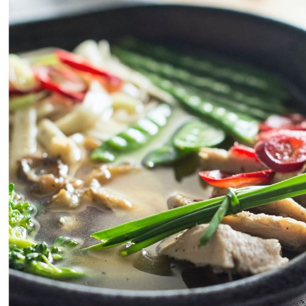

Chicken Soup
This homemade chicken soup recipe is well worth making
it's good for the body and the soul.
How is it that plain chicken and vegetables simmered
together can taste so satisfying?
You don't have to be sick to deserve to enjoy it!

Chicken Soup Ingredients
These are the simple ingredients you'll need for this chicken soup recipe:
- Chicken: This homemade chicken soup starts with a 3-pound whole chicken.
- Vegetables: You'll need carrots, celery, and an onion.
- Seasonings:Simply season the soup with salt, pepper, and chicken bouillon granules (if you want).
How to Make Chicken Soup
You'll find the full, step-by-step recipe below — but here's a brief overview of what you can expect when you make this easy chicken soup:
- Make the stock by boiling the chicken and veggies until the meat is falling off the bone.
- Remove the chicken and cut into pieces (discard skin and bones).
- Strain the vegetables (reserving the stock) and cut into pieces. Rinse the pot.
- Return everything to the pot. Heat the soup through and season to taste.
Send Email